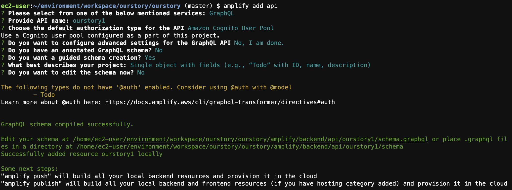

실습 순서
1. name : 하고자하는 앱
2. m5.large 선택
3. create
볼륨 확장 50으로
1. 인스턴스 정보 중 루트 장치 / dev / xvda 클릭
2. ESB ID 클릭
3. 상단에 Action > modify Volume > 50으로 변경
$sudo growpart /dev/nvme0n1 1
$sudo resize2fs /dev/nvme0n1p1
$sudo df -h (볼륨 변경 확인)
$echo fs.inotify.maxuserwatches=524288 | sudo tee -a /etc/sysctl.conf && sudo sysctl -p
클라우드9에 대한 여러 제한을 풀어주는 것
$nvm i v10
$npm i -g expo-cli @aws-amplify/cli yarn
상단에 클라우드9 > preferences > themes > Jett
$expo init > 엔터 > 앱이름 입력(our story)

$curl -s http://169.254.169.254/latest/meta-data/public-ipv4 ip 확인
$export REACTNATIVEPACKAGER_HOSTNAME=확인한 ip(54.180.90.31)
$ cd ourstory
$amplify configure
2번째 선택
이름도 그냥 엔터
URL 뜨면 클릭 > open > next 전부 눌러서 생성
생성 후 뜨는 키 복사 붙여넣기
이름은 지정 없이 엔터
업데이트
입력 및 선택
$amplify status
EC2 > 보안그룹 > 인바운드 규칙 추가
$yarn start


App.js 코드 수정해보면 화면에서 바로 뜬다.
$ cd workspace/ourstory/ourstory
$ yarn add aws-amplify aws-amplify-react-native S3, lamda 등 통신 모듈
$ yarn add native-base 앱 UI 관련 컴포넌트
$ yarn add @react-native-community/netinfo@5.5.1 UI 관련 컴포넌트 추가
$amplify add auth
$amplify status
$amplify push 확정
src 디렉토리 아래에 aws-exports 파일 생성된 것 확인 가능
App.js
import React from 'react';
import { StyleSheet, Text, View } from 'react-native';
import Amplify, { Auth } from 'aws-amplify';
import { withAuthenticator } from 'aws-amplify-react-native';
import AWSCONFIG from './src/aws-exports.js';
Amplify.configure({
...AWSCONFIG,
Analytics: {
disabled: true
}
});
//import Feed from './src/Feed';
function App() {
return (
<View style={styles.container}>
<Text>AAA</Text>
</View>
);
}
const styles = StyleSheet.create({
container: {
flex: 1,
backgroundColor: '#fff',
alignItems: 'center',
justifyContent: 'center',
},
});
export default withAuthenticator(App, false);
1. 이름 / 이메일 동일하게 걍 이메일로
2. 비밀번호 전화번호 입력 후 가입
3. 이메일로 날아온 코드 입력
4. 화면 뜨는 거 확인
$amplify add api

$amplify push
$amplify add storage
$amplify push
$aws s3 ls | grep 버킷 명 (복사해두기)
$wget https://a0.awsstatic.com/libra-css/images/logos/aws_logo_smile_1200x630.png
$aws s3 cp ./awslogosmile_1200x630.png s3://버킷 명/public/ —acl public-read
1. Cognito 메뉴 들어가서 아래쪽 앱 클라이언트 ID 복사
2. AppSync > 쿼리
클라이언트 아이디 붙여넣기
아까 앱에서 가입한 이름, PW로 로그인

3. 쿼리 입력
mutation createPost {
createPost(input: {
userId: "test_user_id",
username: "myeongju",
file: {
bucket: "ourstory1-dev54115-dev",
region: "ap-northeast-2",
key: "aws_logo_smile_1200x630.png"
}
})
}
4. 실행
5. 확인 다이나모 디비 테이블
query fetchPost {
listPosts(limit: 10) {
items {
userId
username
file { key }
}
}
}
1. Header.js 파일 변경
2. $expo install expo-permissions expo-image-picker
3. Feed.js 파일 변경
4. 서버 재시작
5. 앱에서 카메라 권한 확인
{kind=link}